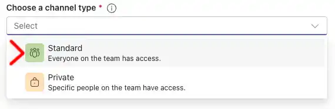
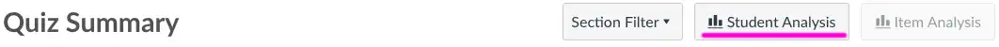

Student outreach includes any work we do to build relationships with students, help clarify course content and assignment expectations, and encourage students to persist and do their best in the class. Weekly outreach messages will be provided with the expectation that you will personalize them to fit your personality.
Before Term Starts - Setup Class
On before class begins, post your version of the following message to Canvas Announcements
SUBJECT: Welcome to Class
Thanks for joining us for another term to learn about web front-end development.
We will use MS Teams for announcements, group communication, and direct questions between students and teachers. I will check messages every day.
I will NOT be posting any further announcements in Canvas. üòÑ
Bro/Sister Smith
Change the Canvas Information.
- Select the Dashboard icon on the left panel.
- Click the new WDD231 course icon.
- Select the tripple dots and change the Nickname. The current name will have you section number and the full name of the coruse which gets clipped.
- Update the Canvas name to include WDD231 and the term number 1-6 (as appropiate)
- OPTIONAL - Open your Canvas course and choose the "Settings" link at the bottom of the list
- Click the "Choose Image" link and select "Upload Image" to choose a new image from your files.
Here are the PNG icons I use for my classes.
Connect Canvas to MS Teams
Open Canvas, select settings, click the "Intergrations" tab and activate Microsoft Sync. Click the "Sync Now" button. W A I T.
Sort the Canvas Gradebook
While your waiting, sort the Canvas gradebok, it makes finding the current assignent much easier. Open your course in Canvas and choose the "Grades". Select the gear in the upper right corner.
Publish Your Canvas Course
Actually, your course will be published automatically on Friday at 11:59 UTC (5:00pm MT)
Activate your class in MS Teams
Once the sync process has finished, you will have a new Teams for your new class. You need to activate the class and let the students in.
Rename the "General" channel to "General Questions - Week 1"
Change the Teams Information.
- Select the Teams icon on the left panel.
- Click the new WDD231 team in your list.
- To the right of the team name, select the … and choose "Manage team" from the drop down menu
- Click the Settings tab. Then expand "Team details" section.
- Update the team name to include WDD231 and the term number 1-6 (as appropiate)
- Click the "Change picture" link and select "Upload" to choose a new image from your files.
- Remember to save.
- NOTE: you may need to wait till after class has started to make the icon change.
Here are the PNG icons I use for my classes.
Add Five standard MS Teams channels for the weekly discussions
Add a class channel for each week for class discussions "General Questions - Week 2" etc.

Select "Standard" channel
Add an additional channel called "Job Descriptions (week5).
There will be an assignment later that has student sharing job descriptions they have found.
Add many more public Channels to Teams for Groupwork
Add a new channel in MS teams that exactly matches the names of the People>WDD231Groups in canvas (takes about 10 minutes)
Group Size
Change the Canvas "Group Membership Limit" to accommodate all your students. If you have 100 students and 12 groups, you may want to set each group to 10 so you have plenty of room for everyone.
Weekly Hints
If you have advice, tips, or hints for a specific week then post them to the General Questions for the related week. Hopefully this will encourage students to use these weekly channels for classwide communication.
Post a message in "General Questions Week 1" Channel
Post a message about UCT.
SUBJECT: Universal Coordinated Time Offset
As a worldwide church, we are no longer using MT as the standard for due dates and team meetings. Instead, all due dates are now set to UCT. Please take a minute to find the offset from where you live. Assignments and team meetings could be EARLIER than listed time as much as 11 hours, or they could be later. üòÅ
Please take responsibility for managing this time difference. This tool may be helpful. https://www.worldtimebuddy.com
On before class begins, modify the following message and then email it to all students using Canvas Inbox
Your Canvas course must be published before this step can be done. Your course will be automatically published at 5:00pm MST (11:59 UTC)
SUBJECT: Welcome to WDD231, the best class ever!
What a fantastic opportunity to work with students from around the world who share a common faith.
Class begins on , and we must hit the ground running.
You should have completed WDD130 & WDD131 before enrolling in this course.
Canvas should be open now if you want to get started early. No Pressure here.üòÉ
You need to dedicate many hours per week to master these concepts. If you don't have that kind of time, you may want to take the class later when you can devote enough time to be successful.
You will be using VS Code to create all your assignments and then hosting them on GitHub. Both are tools used by professionals in the field.
This course requires Advanced Computing Capability to complete the assignments in the course.
https://www.byupathway.edu/technology-requirements
We will be using MS Teams for communication and teamwork, so ensure you have it installed and ready to go.
It's going to be a fantastic and fast-paced ride for the next few weeks, so take your vitamin pills, and let's get started.
If you find yourself overwhelmed within the first week, you should drop the class.
https://studentservices.byupathway.edu/portal/class-schedule#how-do-i-register-and-drop-courses-in-a-term
Bro/Sister Smith
Pre-term Checklist
You will get an email link this week for the preterm checlkist. Please review and submit it.
Useful Tips
Communication Channels: When communicating with students one-on-one, use MS Teams. When sending group outreach messages for assignment progress, use Canvas Gradebook.
Escalation Form: After a student has submitted a ticket and they have not recieved an answer after waiting 5 days, you can escalate their request by completing the Student Support Escalation form.
What Section do I have?
In Canvas, open Settings and choose "Sections" from the top tab navigation. Your section will be listed.
Modify Due Date for One Student
On rare occasions students may have personal challenges and need an extension beyond the two week already provided. In these cases you can modify the "Until" date for a sungle student as follows.
- Open an assignment is Canvas
- Click the Edit button
- Scroll to the bottom and choose "Assign Access" Manage Assign To
- Click +Add
- Add the student to the "Assign to" box
- Match the due date
- Change the Until date to add a few days.

Extra Try on Final Exam
On rare occasions students may start the final exam and have a power outage and need a second attemnt.
- Open the W07 Final Exam in Canvas
- On the right, click the Moderate This Quiz link
- Find the student in the list. You can see how long they spent which helps you verify their claim to need another attempt.
- Currently they will have o attempts left.
- Click the pencil icon
- Change the Extra Attempts to 1.
Submission Comments
The grading team will respond to the majority of comments left with assignment submissions. When these comments should be addressed by the course instructor, the graders are susposed to notify you. You can view all of these submission comments in one place as shown below.
Checking the Pulse of the class.
Every week there are a set of questions labeled as "W0x Ponder: 60-second Status Update". You can see how much time students are spending (self reported), what went well, and what they are struggling with.
Open the weekly survey and click "Survey Statistics".
Some questions will summarize responses.
For questions that are fill in the blank, you will need to click "Student Analysis" to generate and then download a report of all student responses.
Submission Comments
The grading team will respond to the majority of comments left with assignment submissions. When these comments should be addressed by the course instructor, the graders are susposed to notify you. You can view all of these submission comments in one place as shown below.
Notification of Disability Accommodations
On occasion you may get a request for disability accommodations for this class. Most of the requested items like extra time on quizzes and deadline extensions are already built into this course.

If you find a request for "Group Work Modification” as shown above, please send the student a personalized version of the following message.
Your Accessibility Services letter indicates that you are exempt from group work. If you are able to
participate
in your group, that would be a good learning experience but you are not required to do so. There are
questions
every week about your participation in a group. Please answer them in the affirmative so you don't miss any
points.
Bro/Sister Smith
Cheating
On occasion you find that two students have submitted the same work. You can look at the blame report in GitHub to see which one submitted their files first. In this example the student on the left submitted two days ago while the one on the right is still submitting as of 2 hours ago.
Audit Tool Errors
Repository folder name
Insure that the folder name is lowercase "wdd231"
CSS Errors
Test the page using cssstats.com. If you get an error then see if you can identify the css problem using CSS Validation Service
Correct path to the assignment. (lowercase)
- W01 Assignment: Course Home Page
- index.html
- W02: Chamber Directory Page
- chamber/directory.html
- W03: Chamber Home Page
- chamber/index.html
- W04: Chamber Membership Join Page
- chamber/join.html
- W05: Chamber Discover Page
- chamber/discover.html
Comments in CSS can cause errors
In this example, when I found and removed this multiline comment the audit tool began working.
In this example, when I removed the final comment from the larger.css file it started working.
Week 1
On post the following Teams Announcement to the "General Questions - Week 1" discussion.
SUBJECT: Week 1: Group Work
This week, you will NOT have a one-hour group meeting to attend. Instead, you can just introduce yourself to your new group of friends.
Asynchronously work with the course via the MS Teams channel to meet this week's requirements on building your course portal home page. You could share your page link with the other members of your group. If you have any questions, please post them in the appropriate weekly discussion channel of MS Teams.
Slow Starting: On , open Canvas then the "People" tab on the left side. Choose the "WDD231Teams" Tab. From the three dots, select "Message all unasigned Students" and send a personalized version of the following message.
SUBJECT: Group Signup
One of your first assignments is to pick a group in Canvas and then sign up for the same group in MS Teams. You then introduce yourself to the rest of the group members in MS Teams. You will NOT have a meeting the first week. While many students have completed this task, there are still several who have not. Please try to complete this assignment by the end of the day.
No Submission for Course Home Page: On open Canvas, choose Grades and select "W01 Activity: Course Home Page" assignment. Choose "Message Students Who" > Have not yet submitted. Send a personalized version of the following message.
SUBJECT: Course Home Page Progress
I noticed that you have not yet submitted your course home page on GitHub. I know it's not due yet, but I
wanted to see how you're doing with the assignment.
If you need a review from the previous class (sometimes we forget stuff üòú), here is a link with four
tutorials that may be helpful.
https://byui-cse.github.io/wdd130-ww-course/week01/
- Editing Code: Visual Studio Code
- Testing: Web Developer Browser Extension
- Hosting Your Work: GitHub Account
- Uploading: Installing Git
Non-participating Students: On , message students who have not yet submitted the "W01 Setup: Tools". Inform them that this is a 7-week course, and remind them of the upcoming registration deadline. Send a personalized version of the following message.
SUBJECT: Checking In
I noticed you haven't turned in the first assignment. This course is only seven weeks long and ends on . To succeed in this block, it will be important for you to get started as soon as you can. Is there something that might be keeping you from getting started in this class? Please email me so we can work together to help you have a successful experience.
If you do not intend to participate in this course this term, I recommend that you drop the course before the registration deadline on . If you drop before then, you will receive a full tuition refund. If you choose to drop the class after the registration deadline, you will not be able to receive a tuition refund unless you withdraw from all your courses this term.
I look forward to hearing from you and hope you have a successful experience!
Report: Report your week 1 outreach by midnight on
Week 2
On post this announcement to Teams
SUBJECT: Week 2: Looking forward to this module.
This week will be fast and furious as you learn to build you own JSON data file and then import it using fetch. It's a powerful skill to have on your resume.
Remember that frameworks are not allowed in this course.
As you encounter questions on this weeks assignment or you would like to show your work for feedback, please post it here. üòÄ
No Group Problem On open the "People" tab on the left side. Choose the "WDD231Teams" Tab. From the three dots, select "Message all unasigned Students" and send a personalized version of the following message.
One of your first assignments for last week was to pick a group in Canvas and then sign up for the same group in MS Teams. I see that you have not yet signed up for a Canvas group.ü•≤ Please try to complete this assignment by the end of the day.
Bro/Sister Smith
Late Work: On select the W01 Assignment: Course Home Page in the Canvas gradebook and message students who have not submitted the assignment. Send a personalized version of the following email.
SUBJECT: Missing the Week 1 Course Home Page Development
I noticed you have not turned in the first assignment. Because the course is only seven weeks long, to succeed, it will be vital for you to be engaged in this course every week. Is there something that might be keeping you from engaging in this class? Please email me so we can work together to help you have a successful term.üòä
If you do not intend to participate in this course this term, I recommend that you drop the course before the drop deadline on . Depending on your situation, you may be able to receive a prorated tuition refund. If you choose to drop the class after the drop deadline, you will receive a "W" grade on your transcript for this course
Were you able to work through all the Learning Activities for last week?
I look forward to hearing from you and hope you have a successful experience!
Bro/Sister Smith
Group of One Problem On go to Canvas and review the People > WDD231Groups and identify all students in a group of one. Return to Canvas and using the Inbox > Compose a New Message send a message to this list of single group students.
SUBJECT: Selecting a new group
You appear to be the only student who signed up for your group time. ü§™ To complete the group activities
each week, you must join another group. Please go back to Canvas and add yourself to a different group, and
then go to Teams and introduce yourself to your new group. You must attend a group meeting this week, so do
this today if possible.
Bro/Sister Smith
Report: Report your week 2 outreach by midnight on
Week 3
On post this announcement to Teams
SUBJECT: Week 3: Playing with the Big Boys Now
This week you get to interact with a professional level weather API and report dynamic data on your very own website. Another really great skill for your portfolio toolbox. If you have any questions, please post them in the appropriate weekly discussion channel of MS Teams.
Late Work: On select the W02 Assignment: Chamber Directory Page in the gradebook and message students who have not submitted the assignment. Send a personalized version of the following email.
SUBJECT: Missing your W02 Assignment: Chamber Directory Page
I noticed that you have not yet submitted last week's Chamber Directory Page. Remember that it's not too
late! Your assignment will be graded without a late penalty so please get it in as soon as you can.
Do you ever find yourself without power or internet access when trying to work on this class?
Bro/Sister Smith
Group Check: On go back into Canvas > People > WDD231Groups tab and note the students who are
still not signed up for a group. Then look at the grades tab and see which ones have participated and which
have not.
Send one of the following messages to each student using the envelope as shown below (green
arrow). This typically takes me an hour or so to complete but is very beneficial for group work.
SUBJECT: Submitting assignments but no group yet
I see you have been submitting assignments for class but you have not joined a Canvas group yet.
Did you join a Teams group but forget to also join the same group in Canvas?
Did you forget to sign up for a group for this class?
Is there something I can help with?
SUBJECT: Not signed up for a group in WDD231.
I see that you have not submitted any assignments for WDD231 class and you have not joined a group yet. Are you going to continue with this class or are you planning to drop?

On Open module 2 and find the "W02 Ponder: 60-second Status Update".
- Click the quiz in the module.
- Select "Survey Statistics" in the top right corner.
- Click the "Student Analysis" button to generate a report.
- A .csv file should be downloaded to your computer.
See if there are any trends in the submissions that need to be looked at.
Positive Outreach On identify students who scored more than 24/30 on W02 Assignment: Chamber Directory Page and send them a message congratulating them on their work.
SUBJECT: Congratulations on your directory page
I see that you have done well on the Directory Page from last week.
Have you had opportunities to help out members of your team? üòÅ
Bro/Sister Smith
On send a message to ALL students
SUBJECT: Group Functionality
Is your group functioning? If you need to change groups, please let me know.
Bro/Sister Smith
Report: Report your week 3 outreach by midnight on
Week 4
On post this announcement to Teams
SUBJECT: Week 4: More tools for your toolbox
This week you get to implement and design an HTML5 popup modal. We will also take it to the next level with dynamically creating these modals using JavaScript. Before you go, we also have an enhancement to building a form (you learned this in WDD131). We are going to grab data from a URL string and display it onto a web page. üòä If you have any questions, please post them in the appropriate weekly discussion channel of MS Teams.
Late Work: On select the W03 Assignment: Chamber Home Page> in the gradebook and message students who have not submitted the assignment. Send a personalized version of the following email.
SUBJECT: Missing your Chamber Home Page
I noticed that you have not yet submitted last week's home page assignment. Please don't give up because
you can still turn it in. There is no late penalty.
Has your team been able to assist you with this week's assignment?
Bro/Sister Smith
Positive Outreach: On identify students who scored more than 16/20 on W03 Assignment: Chamber Home Page and send them a message congratulating them on their work.
SUBJECT: Congratulations on your Chamber home page
I see that you have done well on the Chamber home Page assignment from last week.
What features do you think should be added to this week's assignment to make it better for future
students?
Bro/Sister Smith
Report: Report your week 4 outreach by midnight on
Week 5
On post this announcement to Teams
SUBJECT: Week 5: Finishing up the Chamber Site
We're getting close to the end so hang on and keep taking your vitamin pills. This week you get to build a new page for your chamber web site that allows people to discover your home town. So be proud of your town and show us some cool things about where you live. If you have any questions, please post them in the appropriate weekly discussion channel of MS Teams. If you have any questions, please post them in the appropriate weekly discussion channel of MS Teams.
Late Work: On select the W04 Assignment: Chamber Join Page in the gradebook and message students who have not submitted the assignment. Send a personalized version of the following email.
SUBJECT: Missing the join page from last week
I noticed that you have not yet submitted last week's web form assignment on your GitHub home page. As you
know, you can still turn it in but we are getting close to the end of the semester.
Have you taken the opportunity to pray for the Holy Ghost to help you with any part of your assignment this week?
Bro/Sister Smith
Positive Outreach: On identify students who scored more than 25/30 on W04 Assignment: Chamber Join Page and send them a message congratulating them on their work.
SUBJECT: Congratulations on completing the join form on your Chamber site.
I see that you have successfully completed the Join Page for the Chamber of Commerce assignment from last
week.
Was your team able to meet this week?
Bro/Sister Smith
Report: Report your week 5 outreach by midnight on
Week 6
On post this announcement to Teams
SUBJECT: Week 6: The beginning of the end of this class.
The final assessment for this class is a multiple-page website, and the best part is that you get to choose
the topic.
Last week, you picked the topic and submitted a project site plan as a single web page.
This week, you are creating that site! As Elder Uchtdorf shared, "The desire to create is one of the
deepest yearnings of the human soul"
This website will show everything you have learned in this and previous classes for this certificate.
As you may have noticed, there is no teamwork allowed for this project, you on your own.üòá
You will create a new repository inside your WDD231 account and host all the files there.
My friends, working with you during this class has been a great experience; I wish you the best as you
create something extraordinary.
On post this announcement to Teams
SUBJECT: Final Project and Audit Report
The new final project needs to be three pages as the audit tool is built to handle three pages. Make sure to watch for any HTML errors or CSS errors as they will show up on the audit report.
The audit report for week 6 requires a full URL to your final project folder. Previous assignments only required a GitHub account. Please use the audit report assist you in completing many of the criteria.
Late Work: On select the W05 Assignment: Chamber Discover Page in the gradebook and message students who have not submitted the assignment. Send a personalized version of the following email.
SUBJECT: Missing last weeks discover page
I noticed that you have not yet submitted last week's discover page on your Chamber Site. As you know, you
can still turn it in without late penalties.
Was your team able to meet this week?
Bro/Sister Smith
Positive Outreach On identify students who scored more than 25/30 on W05 Assignment: Chamber Discover Page and send them a message congratulating them on their work.
SUBJECT: Congratulations on doing well on the Chamber Discover page.
I see that you did a great job on your chamber discover assignment from last week.
How has this course helped you become a better web developer?
Bro/Sister Smith
Report: Report your week 6 outreach by midnight on
Week 7
On post this announcement to Teams
SUBJECT: Final Exam
This week is the big exam. Your Individual Website Project was due on but if you need more time, the latest submission date is this
On send the following message to ALL students in the course. Use the Canvas InBox > Compose a New Message > to all in this class.

SUBJECT: Class ends very soon
Even though this awesome WDD231 block class will close on at midnight. You
must have ALL your assignments submitted by so the graders have time to grade
before grades are due to the home office.
The most important submission is your finished Individual
Website Project.
If you have late submissions from units 5 and 6, make sure to resubmit those before as well.
Bro/SisterSmith
Positive Outreach: On identify students who scored more than 0 on the W07 End-of-Course Evaluation and send them a message thanking them for their feedback.
SUBJECT: Providing Feedback
Thanks for taking the time to complete the end-of-course evaluation. We are constantly looking for ways to improve the course and your feedback is important.
Report: Report your week 7 outreach by midnight on